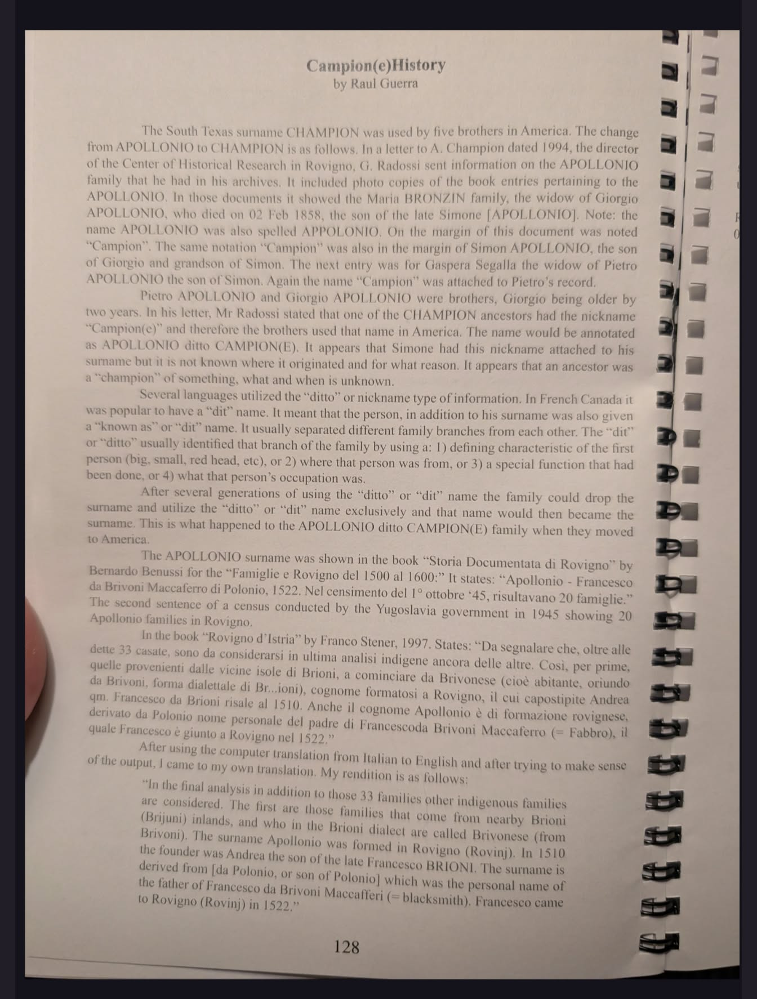
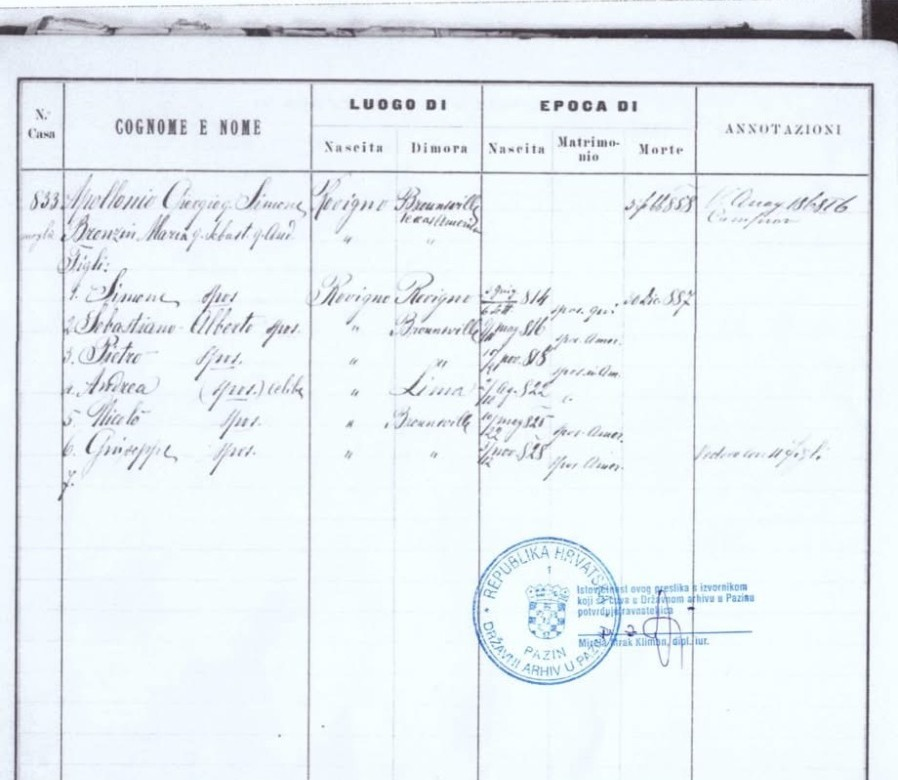
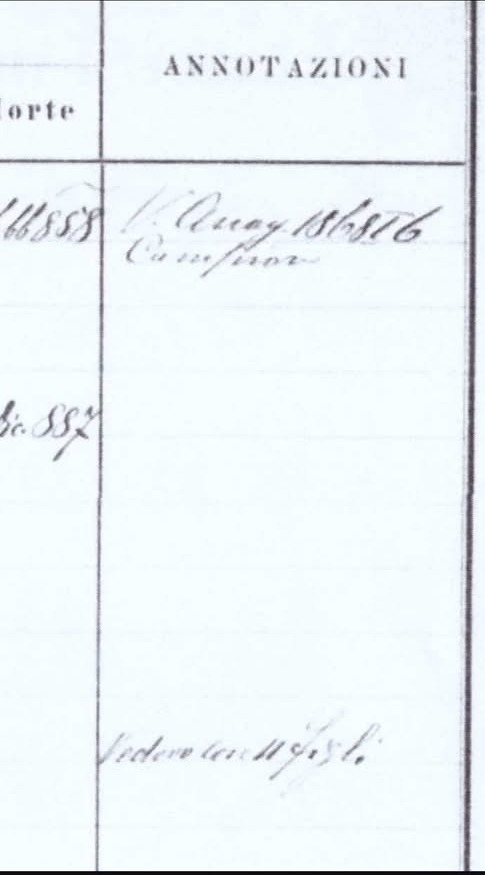
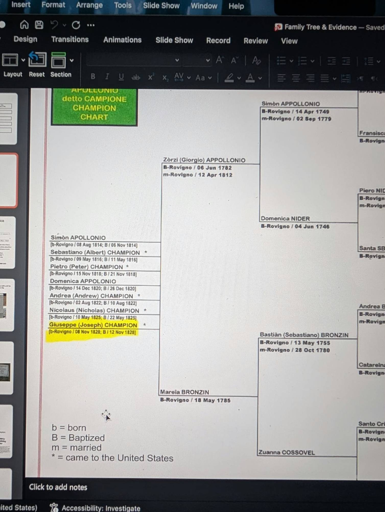

Apollonio, later Champion — and the trail of "Campione"
A page started in answer to a call for help in a genealogy group: a family born in Rovigno in the 1820s, who emigrated to Brownsville, Texas and anglicized Apollonio to Champion — carrying a family nickname, Campione, now found exactly where the original post said it would be, in a Rovinj parish census record.
The family sheet itself is now identified — it's a page from Rovinj parish's Status Animarum ("stanje duša," a household-by-household census kept by the church) for house no. 833, headed by Giorgio Apollonio and his widow Maria Bronzin, certified as a true copy by the State Archive in Pazin. The "Campione" annotation the original post asked about is right where it should be, in the Annotazioni column next to Giorgio's death entry.
The original request
Posted to a genealogy group, asking for help locating one of the documents referenced in a family history book:
"Hi! I was wondering if anyone could help me with this search! Our ancestors were born in Rovigno Istria in the 1820s, and emigrated to Texas. In Istria, their last name was Apollonio but when they came to the states, they changed it to Champion. Supposedly they had a nickname of Campione. The family sheet references Campione in the upper right, see the photo. There is a family history book which vaguely states other places that the nickname Campione can be found, but I can't find the documents! Please see the typed images for info. Can anyone help me look for one of the documents mentioned that state the name Campione in the annotation? Or point me in the right direction? Thank you all so much!" — original post, as written
The book: Campion(e) History, by Raul Guerra
The typed pages from the family history book, page 128, explain exactly where the name comes from and how it became a surname:
"The South Texas surname CHAMPION was used by five brothers in America. The change from APOLLONIO to CHAMPION is as follows. In a letter to A. Champion dated 1994, the director of the Center of Historical Research in Rovigno, G. Radossi, sent information on the APOLLONIO family that he had in his archives. It included photo copies of the book entries pertaining to the APOLLONIO. In those documents it showed the Maria BRONZIN family, the widow of Giorgio APOLLONIO, who died on 02 Feb 1858, the son of the late Simone [APOLLONIO]. Note: the name APOLLONIO was also spelled APPOLONIO. On the margin of this document was noted "Campion". The same notation "Campion" was also in the margin of Simon APOLLONIO, the son of Giorgio and grandson of Simon. The next entry was for Gaspera Segalla the widow of Pietro APOLLONIO the son of Simon. Again the name "Campion" was attached to Pietro's record." — Raul Guerra, Campion(e) History, p. 128
And on where the nickname itself came from:
"Pietro APOLLONIO and Giorgio APOLLONIO were brothers, Giorgio being older by two years. In his letter, Mr Radossi stated that one of the CHAMPION ancestors had the nickname "Campion(e)" and therefore the brothers used that name in America. The name would be annotated as APOLLONIO ditto CAMPION(E). It appears that Simone had this nickname attached to his surname but it is not known where it originated and for what reason. It appears that an ancestor was a "champion" of something, what and when is unknown. […] After several generations of using the "ditto" or "dit" name the family could drop the surname and utilize the "ditto" or "dit" name exclusively and that name would then became the surname. This is what happened to the APOLLONIO ditto CAMPION(E) family when they moved to America." — Raul Guerra, Campion(e) History, p. 128

Found: the document itself — house 833, Rovinj Status Animarum
This is a Stato delle Anime / Status Animarum page — a household census the parish kept, updated over years as children were born, married, emigrated, or died — for house no. 833 in Rovigno, certified by the Državni arhiv u Pazinu (State Archive in Pazin) as a true copy of the original.

| Household head | Apollonio Giorgio, q. [fu, "the late"] Simone — born Rovigno, died 2 Feb 1858. |
|---|---|
| Wife | Bronzin Maria, q. Sebastiano, q. Giovanni — listed as his widow. |
| Sons listed | Simone · Sebastiano Alberto · Pietro · Andrea (celibe, "unmarried" — residence given as Lima) · Nicolò · Giuseppe. Residence ("Dimora") for several of the sons is given as Brownsville — Texas, right in the record itself. |
| Annotazioni | Two notes in the margin: a date (~1 Aug 1858) with "Campione" written directly beneath it, against Giorgio's death entry — the exact annotation the original post was looking for — and a second note further down reading "Vedova con [6] figli" ("widow, with 6 children"). |

The family tree — Apollonio detto Campione
From a typed "APOLLONIO detto CAMPIONE / CHAMPION CHART," matching and extending the Status Animarum entry above:

* Albert, Peter, Andrew, Nicholas, and Joseph are the "five brothers" the family history book opens with. The book's second "Campione" annotation, on Pietro Apollonio son of Simon (Giorgio's brother, via his widow Gaspera Segalla), belongs to a different, earlier branch — Simon (b. 1749)'s son Pietro, not to be confused with Giorgio's own son Pietro/Peter Champion above.
Found: the brothers themselves, in Texas
U.S. census records match the Rovigno chart closely enough to remove any doubt these are the same men — and add the Gulf-port arrival record the roadmap only hoped might exist.
| The 1850 arrival | A passenger index entry for "L Champion," age 33, born Italy 1817, arriving in the United States in 1850 aboard the ship Louisiana — United States, Index to Passenger Arrivals, Atlantic and Gulf Ports, 1820–1874 (a supplemental index covering Gulf and Atlantic ports excluding New York). The initial is almost certainly a misread "A" for Albert (b. 1816) — the age and birth year match him more closely than any other brother. This confirms the Gulf-coast arrival route the roadmap proposed, rather than a direct Texas landing. (FamilySearch record) |
|---|---|
| 1850 census — Webb, Texas (Rio Grande Valley) | Albert Champion (32, Italy), Peter Champion (b. 1820, Italy), and Nicolas Champion (b. 1823, Italy) all already resident here — the earliest U.S. record of any of the brothers, within a year of the "Louisiana" arrival above. Albert's household includes Jose Ma Solis, Estefana Solis, and Josefa Champion (age 20, Mexico) — Albert's Mexican in-laws and, it appears, his wife. (Albert, Peter, Nicolas) |
| 1860 census — Point Isabel, Cameron Co. | Albert, Peter, Joseph (b. 1829), Nicolas (35, with wife Teresa, Mexico, and children Simon/Nicolas/Catharine/ Sebastian all born in Texas), and a George Champion (20, born Austria ~1840) living in Nicolas's household — too young to be one of the five brothers, and not yet placed on the chart. Worth treating as an open question rather than assuming who he is. (Albert, Peter, Joseph, Nicolas & household, George) |
| 1870 & 1880 census — Brownsville / Justice Precinct 1 & 3, Cameron Co. | Albert Champion (Brownsville, 1880: wife Estefana, children John, Euphemia, Anita, Joseph, Frank, Rosa) · Peter Champion (Justice Precinct 3, 1880: wife Felicita, ten children with Spanish given names — Anestacia, Emelio, Feliceta, Louisa, Gregoria, Pablelita, Juana Maria, Timoteo, Estefena, Miguel) · Nicholas Champion (Justice Precinct 3, 1880: wife Terresa, children Lasaro, Mary, Sebastian, Simeon, Margarita, Jose Angel, Catarina) · Joseph Champion (Justice Precinct 1, 1880: wife Marcela, ten children). 1870: Albert, Peter, Nicholas, Joseph · 1880: Albert, Peter, Nicholas, Joseph |
| Andrew — not among them | No Andrew/Andrea Champion turns up in any Cameron County census. This lines up with the Status Animarum register itself, whose "Dimora" column gave Andrea's residence as somewhere read as "Lima" rather than Brownsville — worth confirming against the original image, but consistent with Andrew having gone to South America rather than Texas, unlike his four brothers. |
All four Texas brothers married women from Mexico and raised large bilingual families on the border — which is worth noting on its own: within one generation, an Istrian "detto Campione" household became a Rio Grande Valley Tejano one.
Found: a published biography, and a family that already did this research
Two more sources close most of what was still open about the Texas side — one an authoritative published biography, the other a family member who has spent over a decade doing exactly this kind of work.
| The Handbook of Texas entry | The Texas State Historical Association has a full sourced biography, "Champion, Albert", written by "A. A. Champion" — almost certainly a descendant, and quite possibly connected to the "A. Champion" who received Radossi's 1994 letter in the first place. It confirms Albert spent "several years at sea" before settling in Mobile, Alabama in the early 1840s, then moved to New Orleans, where Peter and Nicholas joined him — the Gulf-route mechanism the roadmap only guessed at, now stated outright. The brothers ran sail lighters at the founding of Point Isabel, Albert later ran the U.S. Mail Stage Line (1858–73) and two ranches (La Florida, the oldest in Cameron County, and La Gloria), married Estéfana Solís in 1850, and was appointed pilot commissioner for the Brazos Santiago port in 1873. He died in Brownsville on 20 Sep 1890. Its bibliography cites the Brownsville Herald (17 Jan 1937), the Gilbert D. Kingsbury Papers (Briscoe Center, UT Austin), and the Joseph Kleiber Letters (UT Brownsville) — three named primary sources not yet checked directly. |
|---|---|
| A family history project already exists | A Find a Grave contributor named "Rovigno Champions" — active for 15+ years, 494 memorials added — maintains 19 virtual cemeteries for this exact family, including "Original Champion Brothers and Wives" (9 memorials) and "Champion Family of South Texas" (412 memorials). This is very likely the single best living contact for anything still open on this page — including the two missing "Campione" annotations back in Rovigno. |
What their records add
| Deaths and burials, confirmed | Albert d. 20 Sep 1890, Old City Cemetery, Brownsville (Champion Vault, Blk 11 Lot 26) · Peter — recorded here as "Pietro Campeoni Champion" — d. 20 May 1898, same cemetery (Blk 60 Lot 01) · Nicolas d. 1889, Our Lady of Mercy Catholic Cemetery, Mercedes · Joseph ("Jose," carrying his mother's name as a middle name, Joseph Bronzin Champion) d. 26 Mar 1882, Port Isabel City Cemetery. "Campeoni" and "Bronzin" surviving as recorded middle/alternate names is itself a small, independent echo of the "Campione" nickname trail. |
|---|---|
| Three Solís sisters | Albert married Estéfana Solís, Peter married Maria Felicitas Solís, and Nicolas married Teresa Solís — all three daughters of Francisco Solís and Anastacia Rivas. Joseph married Marcela Garcia in 1861. A fourth Solís woman, Cirilda Solís Champion (1843–1919), also appears among the "original wives" — not yet placed, but plausibly a second marriage after Marcela's 1880 death. |
| Only four brothers, not five | Both Albert's and Joseph's memorials state plainly: "Four of the six [sons] immigrated from Italy to Texas... Andrew (1822–?)" has no memorial and no death date recorded by the family itself — independent confirmation, from a completely different source than the Rovigno register, that Andrew did not come to Texas. |
| Direct evidence of the maritime connection | Joseph's own U.S. census entries record his occupation as sailor (1860), seaman (1870), then stock raiser (1880) — the Rovigno-to-Gulf-coast maritime link the roadmap proposed, now documented directly rather than inferred. |
| A discrepancy — now resolved | Find a Grave gives Giorgio's death year as 1850 ("Giorgio Campeoni, 1783–1850"), against the 2 Feb 1858 on the certified Status Animarum copy this page holds. A public Geni.com profile for Giorgio — sourced from an Ancestry.com tree (ID 111701831, managed by Geoffrey David Trowbridge, another possible contact) — independently gives his death as 1858, matching this page's own certified document. Two independent sources now agree against Find a Grave's one; 1850 looks like the actual typo. The same Geni profile gives Simon Appollonio's fuller name as "Simone Appollonio DeChampione" — the epithet already fused onto his name as a surname-in-practice a generation before the book's own account of the brothers adopting it formally in Texas. |
| George, partly resolved | Albert's own son George Champion Sr (1852–1929) is a real, documented person — but born too late to be the "George Champion, age 20, born Austria ~1840" found living in Nicolas's 1860 household. That George remains unplaced; he is not Albert's son of the same name. |
| Peter and Nicolas, individually | Peter's memorial gives his marriage to Felicitas Solís as 7 Dec 1856 (not 1850) and lists all twelve children, including a Timoteo (b. 1858) matching the child seen in the 1880 census. Nicolas's memorial confirms his marriage to Teresa Solís in 1854 and his death in Santa Maria, Cameron Co., in 1889. |
| "Four" or "five" — the family's own records disagree | Albert's, Joseph's, and Nicolas's memorials all say "four of the six [sons] immigrated... to Texas" — but Peter's says "five of their six children immigrated to Texas." This is a real inconsistency inside the family's own Find a Grave project, not just between it and the Rovigno register — worth asking "Rovigno Champions" directly whether Andrew is now believed to have reached Texas after all, or whether this is simply a copy-paste slip between memorials. |
| A possible living descendant | A commenter named Frances Skipworth left messages on Albert's memorial calling him "great, great grandpa," and on Joseph's and Nicolas's calling them "great, great uncle" — consistent with being a direct descendant of Albert specifically. Worth a polite Find a Grave message alongside the one to "Rovigno Champions" above, since she may be a different person with her own knowledge of the family. |
Where to look next
FamilySearch's microfilmed Rovinj parish collection (Matična knjiga, 1553–1913) only covers births, marriages, and deaths (Rođeni / Vjenčani / Umrli) — it does not include Status Animarum books, so this document was never going to turn up in an ordinary FamilySearch search. But the State Archive in Pazin's own register database (dapa.hr) lists the Status Animarum ("stanje duša") holdings for Rovinj/Rovigno directly:
| Rovinj/Rovigno stanje duša | Ten volumes, all held at ŽU Rovinj (the Rovinj parish office) and all marked as digitized and viewable in DAPA's reading room: 1861–1866, two undated "XIX. st." (19th century) volumes, two more spanning "XIX–XX. st.," then 1905–1920, 1908–1923, 1914–1923, 1923, 1923–1942, and 1928. |
|---|---|
| Best candidate | House 833's own annotation is dated close to Giorgio's 1858 death, which is earlier than the 1861–1866 volume's stated range — Status Animarum books were running ledgers kept open for years, so the same physical volume very plausibly starts earlier than its catalogued end-date range suggests. The two 19th-century volumes marked only "XIX. st." are worth checking first alongside 1861–1866. |
| How to actually see them | These are marked "digitalno (u čitaonici)" — digitized, but viewable only in DAPA's own reading room in Pazin, not online. The practical path is a direct research request to Državni arhiv u Pazinu (contact via dapa.hr) asking specifically for the Status Animarum entries of Simon Apollonio (son of Giorgio, grandson of Simone) and of Pietro Apollonio (son of Simone, via widow Gaspera Segalla) in the Rovinj "stanje duša" volumes — the same request that, if it can reference the 1994 Radossi letter and house 833 as a known match, gives the archive a very specific thing to look for rather than a blind search. |
Research roadmap — telling the fuller story
Finding house 833 answers the original question. These are the directions worth pursuing next, organized by what each one actually adds to the story rather than just closing the one open citation.
1 · Close the paper trail — the two missing annotations
| Go straight to the source | The Centro di Ricerche Storiche di Rovigno (crsrv.org) — the institute Radossi directed from 1969 until 2018, and the one that supplied the 1994 letter and photo copies in the first place — is very much still open, at Trg Matteotti 13, Rovinj (info@crsrv.org, +385 52 811 133). Radossi himself is now honorary president of the Unione Italiana; the institute may still hold his 1994 research file on the Apollonio family, which would skip re-finding the other two annotations from scratch. |
|---|---|
| The archival fallback | If the CRS's own file can't be found, the direct request to Državni arhiv u Pazinu for the Simon Apollonio and Pietro Apollonio/Gaspera Segalla Status Animarum entries (detailed above) is the fallback path. |
| Look for the letter itself | A surviving copy of the actual 1994 letter (to "A. Champion") — in family papers on the Texas side — would likely settle both a. what house numbers the other two annotations are under, and b. who "A. Champion" was, a living link between this research and whoever holds the rest of the family history book today. |
2 · Why "Campione"? — the nickname's own origin
| Read past the one quoted page | The book quotes two local histories — Bernardo Benussi's Storia Documentata di Rovigno and Franco Stener's Rovigno d'Istria (1997) — but only for the Apollonio surname's own formation (from Francesco "da Brivoni," son of Polonio, arriving in Rovigno in 1522). Neither excerpt yet explains what made a later Apollonio a "champion" of something. Worth reading both in full for a passage that does. |
|---|---|
| Date the nickname more precisely | Radossi's letter says only that Simone (the earliest Apollonio named on the chart, or possibly his own father, unstated) carried it first, and that where and why is unknown. Since FamilySearch's own Rovinj microfilms (Rođeni 1560–1863, Vjenčani 1564–1907) are the town's actual parish registers — a different, earlier-starting set than the Status Animarum books — checking Apollonio entries there before 1749 (Simon's birth) could catch the nickname's first written appearance and possibly the occasion behind it. |
3 · Why Texas, and why so early? — largely confirmed
| This was the unusual part — now dated | Mass Istrian emigration to the United States is mostly an 1880s–1910s story, mostly to California or the industrial Northeast — not South Texas in 1850. A Gulf-port passenger index entry (found above, see "Found: the brothers themselves") now dates Albert's own arrival to 1850, aboard the ship Louisiana, via a Gulf or Atlantic port other than New York — and the 1850 census catches all three eldest brothers already in Webb/Rio Grande Valley within the same year. The "why South Texas specifically" is still open — a maritime or trade connection out of Rovigno (a fishing and shipbuilding town) down to the newly-American Rio Grande border remains the likeliest mechanism, but unconfirmed. |
|---|---|
| Still worth pursuing | The Louisiana's actual departure and stopover ports (the ship name and 1850 date are enough to look up the voyage itself), Texas naturalization records for all four Texas brothers, and — since the family is now confirmed Catholic and settled in Point Isabel/Brownsville by 1850 — the diocesan sacramental registers for the earliest Point Isabel/Brownsville-area parish (see the ready-to-send letter, below) for their baptisms, marriages, and their children's baptisms. |
4 · The five brothers and their descendants today
| Reconstruct each brother's own family | Wives, children, and where each Champion line settled — via census and Cameron County vital and land records — both for its own sake and because a descendant somewhere is the most likely person to hold the rest of the family history book (only page 128 has been seen on this page so far) or a copy of the Radossi letter itself. |
|---|---|
| Burials | Find a Grave and Cameron County cemetery records for Albert, Peter, Andrew, Nicholas, and Joseph Champion — a fast way to locate the family's own later generations. |
Ready to send
Four enquiries, drafted and ready to send as-is or adapt. Each names exactly what's already been found, so the person on the other end has a specific thing to check rather than a cold genealogy request.
To "Rovigno Champions" on Find a Grave
Via Find a Grave's own "Send Message" on their profile — likely the single best lead on this whole page, since they've already documented hundreds of this family's own descendants.
"Hello — I hope this reaches you well. I'm researching the Apollonio/Campione family of Rovigno (Rovinj), who became the Champion family of Point Isabel and Brownsville, and I came across your 'Original Champion Brothers and Wives' and 'Champion Family of South Texas' virtual cemeteries — extraordinary work.
I'm trying to track down two more references to the family nickname "Campione," mentioned in a 1994 letter from Giovanni Radossi (director of the Centro di Ricerche Storiche di Rovigno) to an "A. Champion" — possibly a relative of yours, or of A. A. Champion, who wrote the Handbook of Texas entry on Albert. I've already found the "Campione" annotation on Giorgio Apollonio's own Status Animarum record (house 833, Rovigno), but the letter mentions two more: one on Simon Apollonio (Giorgio's son) and one on Pietro Apollonio (Simone's son) via his widow Gaspera Segalla — neither found yet.
Do you know whether the Radossi letter, or the rest of the family history book it's quoted from (Campion(e) History, by Raul Guerra), still exists in the family? Also — I noticed a small discrepancy: your records give Giorgio's death as 1850, while a certified Rovigno parish record I have gives 2 Feb 1858. Do you know which is right? Thank you so much for any help, and for all the work you've already put into this family's history." — draft, ready to send in English
To the Centro di Ricerche Storiche di Rovigno
info@crsrv.org · Trg Matteotti 13, 52210 Rovinj-Rovigno · Radossi's own institute, still operating from the same building.
"Gentile Centro di Ricerche Storiche di Rovigno,
Vi scrivo per conto della famiglia Champion (in origine Apollonio), di Rovigno, emigrata a Brownsville, in Texas, verso il 1850. Stiamo completando una ricerca genealogica iniziata dal Prof. Giovanni Radossi, che nel 1994 scrisse una lettera a un membro della famiglia (indicato come "A. Champion") allegando fotocopie di voci d'archivio riguardanti la famiglia Apollonio di Rovigno — in particolare l'annotazione "Campione" trovata su tre atti: quello di Giorgio Apollonio (morto il 2 febbraio 1858, figlio del fu Simone) e di sua moglie Maria Bronzin; quello di Simon Apollonio (figlio di Giorgio); e quello di Pietro Apollonio (figlio di Simone), tramite sua moglie Gaspera Segalla.
Abbiamo già ritrovato il primo di questi tre atti — lo Stato delle Anime della casa n. 833 di Rovigno, con l'annotazione "Campione" accanto alla voce di morte di Giorgio Apollonio — in una copia autenticata dall'Archivio di Stato di Pisino (Pazin). Ci mancano ancora gli altri due.
Sareste così gentili da verificare se il fascicolo di ricerca del Prof. Radossi su questa famiglia — quello alla base della sua lettera del 1994 — sia ancora conservato nel vostro archivio? Qualunque informazione, anche parziale, ci sarebbe di grande aiuto.
Vi ringraziamo molto per il vostro tempo e per il lavoro che il Centro svolge da decenni per la nostra comunità.
Cordiali saluti," — draft, ready to send in Italian
In English, for reference: "I'm writing on behalf of the Champion family (originally Apollonio) of Rovigno, who emigrated to Brownsville, Texas around 1850. We're completing genealogical research begun by Prof. Giovanni Radossi, who in 1994 wrote to a family member ('A. Champion') enclosing photocopies of archive entries for the Apollonio family of Rovigno — specifically the annotation 'Campione' found on three records: that of Giorgio Apollonio (died 2 Feb 1858, son of the late Simone) and his wife Maria Bronzin; that of Simon Apollonio (Giorgio's son); and that of Pietro Apollonio (Simone's son), via his wife Gaspera Segalla. We've already found the first of these three — the Status Animarum for house no. 833 in Rovigno — in a copy certified by the State Archive in Pazin. We're still missing the other two. Could you kindly check whether Prof. Radossi's 1994 research file on this family survives in your archive? Any information, even partial, would help enormously. Thank you for your time and for the Centre's decades of work for our community."
To the State Archive in Pazin (DAPA)
dapa@dapa.hr · Vladimira Nazora 3, 52000 Pazin · the fallback if the Centro's own file doesn't survive.
"Poštovani,
Istražujemo obiteljsku povijest obitelji Apollonio (kasnije Champion u SAD-u) iz Rovinja. U vašoj bazi matičnih knjiga pronašli smo podatak da se deset svezaka "stanje duša" (status animarum) za župu Rovinj čuva u Župnom uredu Rovinj, digitalizirano i dostupno u vašoj čitaonici (razdoblja: 1861.–1866., dva sveska "XIX. st.", dva "XIX–XX. st.", te 1905.–1920., 1908.–1923., 1914.–1923., 1923., 1923.–1942. i 1928.).
Već posjedujemo ovjerenu presliku jednog zapisa iz te vrste knjiga — kuća br. 833, obitelj Giorgio Apollonio (umro 2. veljače 1858., sin pok. Simeona) i njegove udovice Marije Bronzin, s bilješkom "Campione" uz zapis o smrti.
Tražimo dva daljnja zapisa iste vrste, spomenuta u pismu g. Giovannija Radossija iz 1994. godine:
1. zapis Simona Apolonija (sina gore navedenog Giorgia, unuka Simeona);
2. zapis Petra Apolonija (sina Simeona), naveden preko njegove udovice Gaspere Segalla.
Biste li nam mogli reći jesu li ovi zapisi dostupni za pregled ili naručivanje preslike, te koji je postupak? Unaprijed zahvaljujemo na pomoći.
S poštovanjem," — draft, ready to send in Croatian
In English, for reference: "We're researching the Apollonio family (later Champion in the US) of Rovinj. Your register database lists ten 'stanje duša' (status animarum) volumes for the Rovinj parish, held at the Rovinj parish office and digitized for viewing in your reading room. We already hold a certified copy of one such record — house no. 833, Giorgio Apollonio and his widow Maria Bronzin, with the annotation 'Campione' beside the death entry. We're looking for two further entries mentioned in a 1994 letter from Giovanni Radossi: Simon Apollonio (Giorgio's son) and Pietro Apollonio (Simone's son, via his widow Gaspera Segalla). Could you tell us whether these are available to view or to order as copies, and what the process is? Thank you in advance."
To the Diocese of Brownsville
chancery-receptionist@cdob.org · (956) 542-2501 · for the earliest Point Isabel/Brownsville-area parish's 1850s sacramental registers.
"Dear Chancery Office,
I'm researching the Champion family (originally Apollonio, of Rovigno, Istria), who settled in the Point Isabel / Brownsville area of Cameron County in 1850. Four brothers emigrated and settled there: Albert (b. 1816), Peter (b. 1818), Nicholas (b. 1825), and Joseph (b. 1828) Champion. U.S. census records place them in the area from 1850 onward, married to wives from Mexico (Estefana Solis, Felicita, Teresa, and Marcela), with children born in Texas from the 1850s through the 1870s.
Could you tell me which parish would have served the Point Isabel/Brownsville area in the 1850s–60s, and whether that parish's baptism and marriage registers from that period survive — either at the parish itself or on microfilm elsewhere? I'd be very grateful for guidance on where to direct a records request for this family.
Thank you for your time," — draft, ready to send in English
The Catholic Archives of Texas in Austin (Selena Aleman, selena@txcatholic.org) holds microfilm of many early Texas parish registers, but directs genealogical requests to the parish or diocese first — the Diocese of Brownsville is the right starting point, not CAT directly.